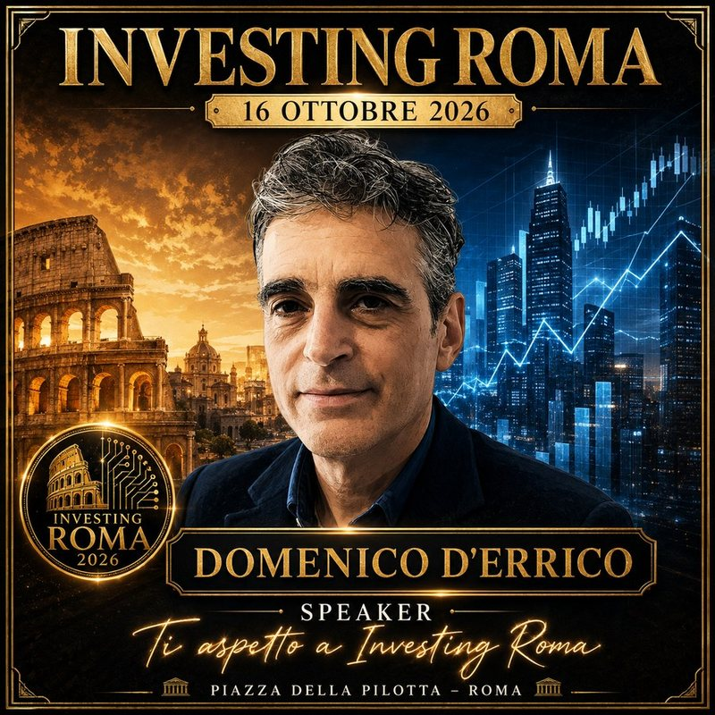

Edu-Fin 2026
25 September 2026
Bari
Dall'Algoritmo al Mercato Reale: l'Intelligenza Artificiale alla Prova del Trading
Talk by Domenico D'Errico, in Italian
Strategies, analysis and live operation without a safety net: what happens when a strategy built with AI leaves the backtest and meets a real market, where slippage, execution and the discipline to keep or drop a position are no longer assumptions.
Closing session of the in-person day of the master programme Finanza e Trading di Borsa, organised by Work at Wall Street.

Investing Roma 2026
16 October 2026
Rome
Analisi Tecnica e Linguaggi di Programmazione nell'Era degli Agenti AI
Talk by Domenico D'Errico, in Italian
How to build an algorithmic trading strategy while keeping control of the development process. AI agents have lowered the barrier to designing and deploying trading strategies, which makes solid technical competence more important rather than less: the risk is producing solutions so clever that nobody who commissioned them can understand what they do.
The talk draws on the article published in Technical Analysis of Stocks & Commodities on reproducing, validating and monitoring trading ideas with AI agents.